Автономная экосистема жизни · Карта цикла
Builds the wall,
plants the world.
Автономный эко-агромодуль с интегрированным смарт-агрокомплексом замкнутого цикла. Умный дом, который самостоятельно производит энергию, воду и еду. Работает как живая экосистема — отходы одного процесса становятся ресурсом для другого. Обеспечивает всем необходимым, генерирует пассивный доход и сохраняет независимость от внешних инфраструктур. Окупаемость 2–4 года — после чего дом приносит чистый доход.
Замкнутые циклы
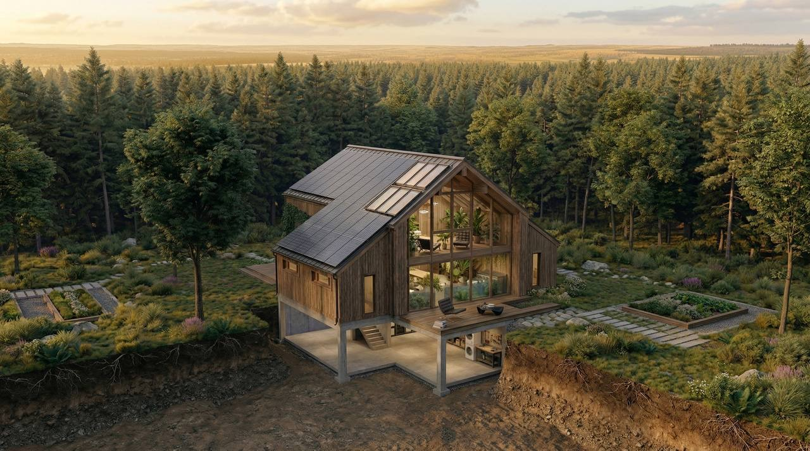
Тестовый эко-агромодуль · подмосковный лес · вид с дрона
Создание концепции, участвующей в эволюции общественного сознания и качества жизни. Направленная на формирование постматериальной модели бытия в постиндустриальный период через синхронную трансформацию внешней среды и внутреннего мира.
Внешние условия поддерживают внутренний рост, внутренняя трансформация формирует новое осознанное качество жизни.
Реализация миссии — вклад в развитие общества, с потенциалом формирования концепции единства и наследия.
Первостепенная ценность не в авторстве и не в выгоде, а в каждом, кто принял участие и внёс вклад в неизбежную реальность будущего.
Технологии — мост, по которому мы возвращаемся домой. Использовать пик человеческого интеллекта, чтобы вернуть человечеству право на естественную, здоровую и осознанную жизнь.
На протяжении веков человечество строило цивилизацию, жертвуя биоритмом, экологией и душевным покоем ради прогресса. Сегодня технологии достигли той точки зрелости, когда они могут перестать быть «надзирателями» и стать невидимыми помощниками.
Основная задача — закрыть базовые потребности с помощью инноваций, чтобы высвободить ресурс человека для Holistic Living. Это не отказ от цивилизации, а высшая форма использования DeepTech, чтобы вернуться к самому простому — Естественности.
Концепция объединяет критически важные сферы жизнедеятельности в единую экосистему. Все они закрывают базовые потребности — автономия, безопасность, еда, здоровье, время, развитие.
Опорные принципы на которых стоит проект. Не утопия — рабочая модель, где природа и технологии работают друг на друга.
Аутентичный, естественный, здоровый, осознанный, самодостаточный. Природа и технологии дополняют друг друга вместо утилизационного быта.
Восстановление физических и моральных сил, духовное развитие, природотерапия, созерцание, любимое дело.
Свободное коммьюнити на принципах взаимопомощи, доверия и коллективной безопасности — энергетической, продовольственной, экономической, идеологической, духовной, физической.
Альтернатива на фоне политических, экономических и экологических кризисов. Локальное обеспечение водой, едой, энергией.
Любимое дело, IT/AI, ремесло, блогинг, маркетинг, обучение. Гибкий график без жёсткой привязки к офису.
Автоматизация, нейросистемы, роботизация работают на восстановление природы и баланс, а не против.
Онлайн-обучение в безопасной среде, практика на природе, реальные навыки, окружение таких же детей.
Творчество, фермерство, строительство, сыроварение, виноделие, столярное / гончарное / кожевенное дело — часть полноценной жизни, а не хобби.
Свой ритм, дом, который работает на себя и приносит прибыль. Не клетка между бетонных стен.
Среда раскрывает потенциал и возвращает человеку естественное чувство дома.
Аутентичность, здоровый образ жизни, благосостояние, творчество, ремесло, агротехнологии, биохакинг, духовность, осознанность, любовь, добродетель.
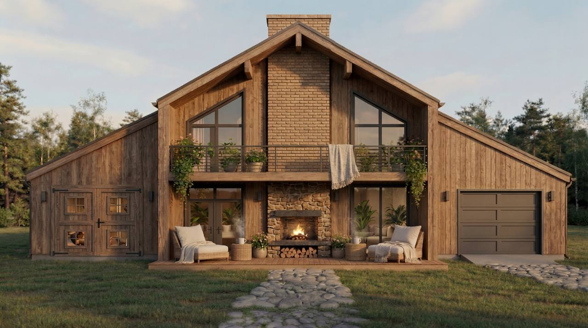
Мировой тренд на осознанное потребление, экологичность и аутентичный опыт формирует запрос на новый формат недвижимости. Одно из перспективных направлений — автономное и экологичное загородное проживание и иммерсивный агротуризм (комфортное размещение + современные сельхозпрактики, фермерский и ремесленный образ жизни). В России направление в фазе активного роста. Растущий спрос вдохновляет на создание инновационного решения — автономного агротуристического кластера (фермерского и ремесленного иммерсивного глэмпинга на основе автономных эко-агромодулей).
В основе — единая концепция развития от расширенной инфраструктуры общего пользования до полноценного экопоселения.
От 10 однотипных или индивидуализированных эко-домов с последовательным развитием до поселения.
IT-коворкинг, ремесленные мастерские, зоны для творчества и производства, фриланса, предпринимательства, обучения и обмена опытом.
Общие производственные зоны для продуктообмена и продовольственной автономии, на основе дефицита или уникального фермерства и ремесленничества.
Жители обеспечивают себя и общество всем необходимым — от еды до средств быта.
Централизованная система — водонапорные башни, общие резервуары, сбор и фильтрация воды.
Продуктообмен между соседями, кооперативные эко-боксы, локальная продовольственная экономика.
Биохакинг, альтернативная и холистическая медицина, натуропатия — телесные практики, фитотерапия, восстановительные методики.
Дорожки и покрытия из переработанных отходов — замыкая цикл ресурсного использования с помощью 3D печати.
Вместо традиционных кладбищ — выращивание вековых деревьев как символа жизни и преемственности, с QR-кодами с историями жизни.
Со своим AI и Blockchain, работающая от автономной сети.
Полноценный автономный эко-агромодуль — умный дом + интегрированный и автоматизированный смарт-агрокомплекс для фермерства и иммерсивного агротуризма.
Объединение нескольких автономных эко-агромодулей в единый кластер с общей инфраструктурой, DAO-экономикой и физической тканью между модулями.
Полноценное поселение с расширенной инфраструктурой общего пользования, локальной блокчейн-экономикой, развитием ремёсел и продовольственной автономией.
Двухэтажный барнхаус, с солнечными панелями и сбором дождевой воды на крыше, панорамной теплицей и оранжереей внутри, инженерным ядром и энергетическим узлом в подвале, смарт-фермой, биогазовой установкой, вермифермой и скважиной на участке. Всё, что нужно для полноценной и автономной жизни — внутри одного модуля.
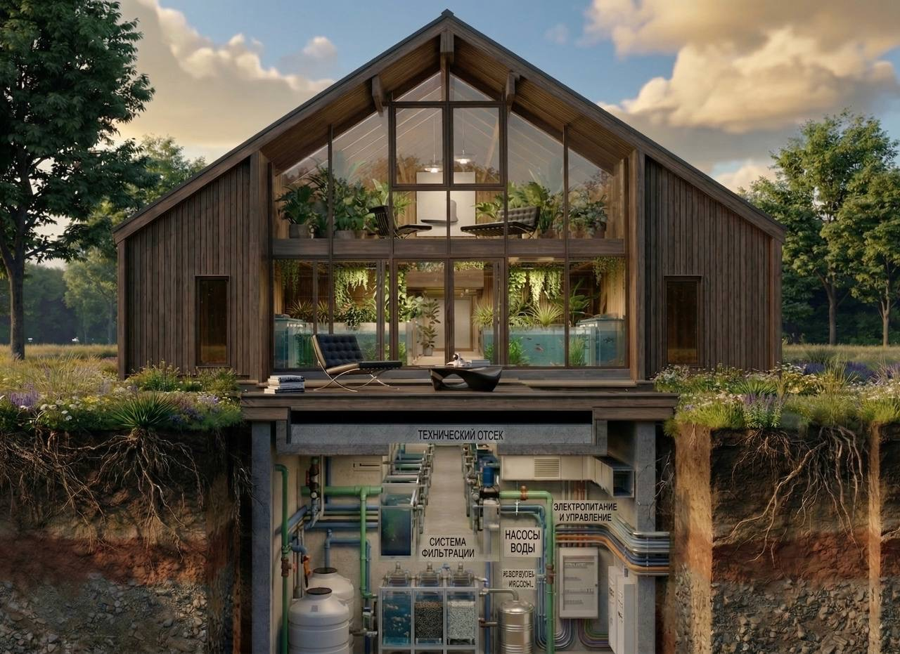
Разрез · оранжерея + подвал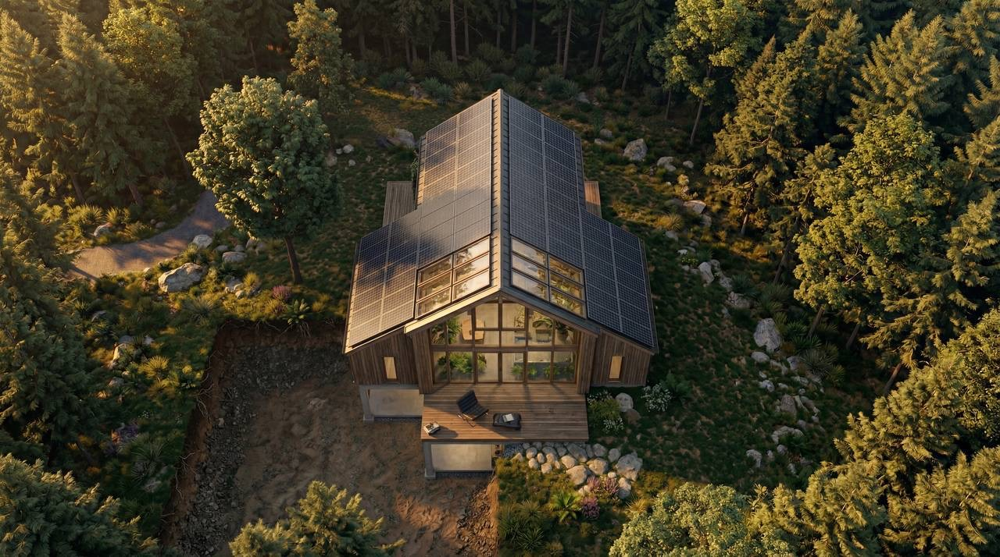
Вид сверху · солнечная крыша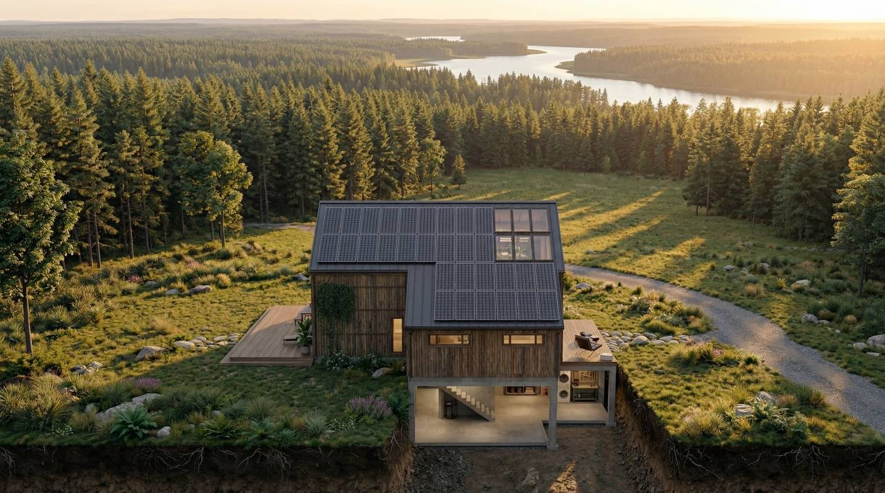
Интеграция в ландшафт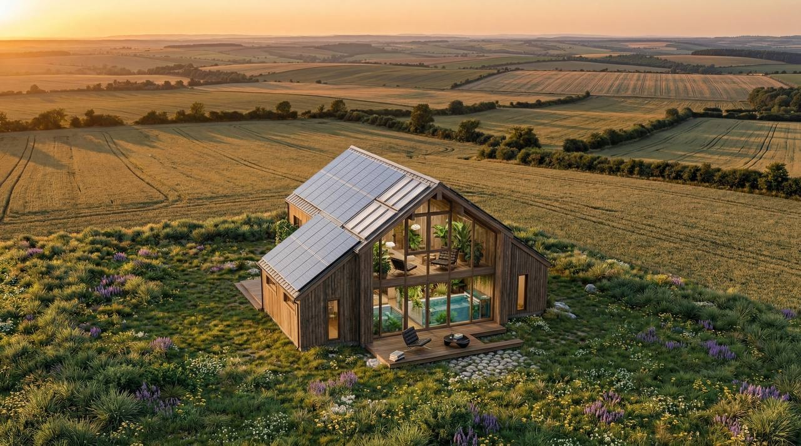
В поле · с оранжереейКаркас (брус) + газобетон (кирпич / камень), утепление ЭППС / каменная вата. Утеплённая шведская плита (УШП) с тёплым полом. Металлочерепица + панорамные витражи. Гибкая конструкция — модуль можно расширять по мере необходимости. 1 этаж: прихожая, техкомната, санузел, кухня, зал. Мансарда: зона отдыха с балконом, рабочая/детская, тёплый чердак.
Интегрированная смарт-теплица с оранжереей. Аквапоника + гидропоника NFT/DWC + вертикальные грядки. Тропический микроклимат (авокадо в куполе). Аквариумы с тилапией / форелью, симбиоз с растениями. Грибная ферма в затенённой зоне. Производит еду 365 дней в году. AI-прогнозирование роста, диагностика болезней (CV + ML, Plantix), оптимизация полива.
Автоматизированный животноводческий блок: 10–20 кур-несушек, перепелов, уток; 5–6 кроликов; 2–3 карликовые козы / овцы. Мясо, молоко, сыр, яйца, сыро-вяленые и копчёные изделия, удобрение, разведение на продажу. Авто-кормушки и поилки с дозаторами, авто-сбор яиц, мобильные электроизгороди, зимний подогрев. CV-распознавание животных. Помёт уходит в вермиферму и биогаз. Можно оставлять на 1–3 недели.
Гараж для автомобиля и техники, мастерская с инструментами, кладовая, резервный гибридный генератор с автозапуском, стабилизатор напряжения. Ремесленная зона для сыроварения, виноделия, пивоварения, мыловарения, столярного, гончарного, кожевенного дела, варения натуральных напитков, копчения.
LiFePO4 (30 кВт·ч) + инвертор. Фильтрация воды (УФ + биоуголь). Биогазовый реактор. Распределительные узлы. Сервер умного дома. Продукты долгого хранения. Всё критическое — под одной крышкой и в одном месте.
Энергетический узел. Возобновляемые источники: 6 кВт солнечных панелей с трекером + 3 кВт горизонтальный мини-ветрогенератор. Резерв — смарт-ГЭС и биогазовый генератор. LiFePO4-аккумуляторы 30 кВт·ч / 48V. Умный распределитель нагрузки с приоритетами. Печь-камин + водяной контур, тёплые полы, рекуперация тепла из фермы / теплицы. +215 % запас в пик сезона уходит в продажу.
Персональная AI-инфраструктура (Alive). Home Assistant + IoT (Zigbee / Z-Wave). Климат-контроль, видеонаблюдение, прогноз генерации, обнаружение утечек. AI-оптимизация полива по влажности и прогнозу погоды. Распределение энергии с приоритетами (дом, теплица, ферма, отопление). Пожаротушение и молниеотвод. Управление с телефона или голосом, Telegram-бот, веб-интерфейс.
Вода из родника или скважины. Минерализация и полезные свойства, масла, хвойные и дубовые веники, шишки, отвары хвои, коры, корней, веток, листьев, овса, лекарственных цветов и трав. Дровяная печь, возле воды.
Грядки-холмы, мульчирование, разделение под культуры. Фрукты (яблоки, груши, вишни, черешни), овощи (картофель, морковь, лук, чеснок), ягоды (смородина, малина), цветы, травы и лекарственные растения (полынь, подорожник), зерновые (ячмень, овёс), бобовые, кормовые (тыква, кабачки). Земляные валы и канавы (swales) для сохранения влаги.
1–2 улья пчёл. Опыление сада и огорода, продукты пчеловодства — мёд, воск, прополис, перга.
Вертикальные фермы, аквапоника, возобновляемые источники и другие инженерные решения объединены в единый регенеративный организм, спроектированный по принципам биомиметики.
Оснащён автоматизированными агротехнологиями и системами замкнутого цикла основных процессов жизнедеятельности и производства ресурсов, с минимальной зависимостью от внешней инфраструктуры и централизованных систем.
Обеспечивает комфортное проживание, удобство ведения хозяйства (смарт-фермерства) с минимальным участием — сервисная реализация продукции.
Формат комплексного решения модульного строительства, доступного каждому — от эконом- до премиум-сегмента.
Под определённые потребности по запросу — конфигурируется под цель использования.
Гибкая конструкция для расширения и добавления новых функциональных зон по мере необходимости.
За счёт автоматизации управление смарт-агрокомплексом занимает 1–3 часа в день или 1–3 дня в неделю. При минимальных оборотах модуль можно оставлять на срок до 1–3 недель. Строительство и проживание потенциально окупается через 2–4 года и приносит стабильный доход на протяжении всего времени эксплуатации — в отличие от привычной недвижимости, которая чаще всего несёт лишь расходы.
Солнечные панели, ветрогенераторы, системы сбора дождевой воды, смарт-ГЭС.
Своя энергия, вода, еда — независимость от внешних поставщиков.
Отходы в энергию и удобрения — компостирование, биоферма, вермиферма.
Экологически чистая натуральная еда на малых площадях — вертикальные грядки, аквапоника, гидропоника, AI.
Подписки на эко-продукты и эко-боксы, иммерсивные ретриты, маркетплейсы.
Технологии и сервисы, упрощающие управление и обслуживание комплекса.
Биоферма как один организм. Система, где рыба, растения, животные, черви и микроорганизмы работают как единый живой механизм. Отходы одних становятся пищей других — замкнутый цикл без химии и почвы.
Симбиоз гидропоники (выращивание растений без почвы) и аквакультуры (разведение рыб): вода из аквариума питает растения, растения очищают воду для рыб.
Устойчивые экосистемы, где растения, животные, микроорганизмы взаимосвязаны — каждый элемент работает на других.
Использование червей (вермикомпостирование) для переработки органических отходов в удобрения, которые потом возвращаются в систему.
Разновидность аквапоники с усиленным использованием органических процессов — например, вермикомпостных чаёв вместо минеральных растворов.
Виды рыб: тилапия, клариевый сом, форель, карп, осётр. Автоматизация: автокормушки с дозатором (по расписанию или датчику активности рыб). Кислородный датчик + аэратор с солнечной батареей. Фильтр-биореактор с нитрифицирующими бактериями.
Типы: NFT (Nutrient Film Technique) для зелени, DWC (Deep Water Culture) для томатов / огурцов, вертикальные грядки для клубники / трав. Что выращивать: листовые (салат, базилик, шпинат, мята), овощи (огурцы, томаты, перцы, баклажаны), ягоды (клубника). Автоматизация: датчик EC/TDS, УФ-стерилизатор, LED-освещение с таймером.
Кролики: Калифорнийский, Новозеландский (быстрый рост). Авто-подача корма, поилки с ниппелями, ленты для сбора помёта в вермикомпостер. Птица (перепела, куры-несушки): яйца + мясо, авто-сбор яиц (наклонный пол). Насекомые для рыб: мучные черви, сверчки в отдельных контейнерах.
Черви: калифорнийские, старатели. Процесс: помёт животных → черви → биогумус + «червячный чай». Чай идёт в корм рыбам или удобрение растениям. Грибная ферма: вешенки, шампиньоны, шиитаке растут на субстрате солома + биогумус.
Солнечные панели + аккумуляторы (для насосов, датчиков). Биогаз опционально: метан из помёта → генератор / отопление. Умное управление: датчики pH, температуры, O₂, влажности, уровня воды. Сценарии: если NH₃ выше нормы → усилить аэрацию. Если мало нитратов → добавить червячный чай. Удалённый мониторинг через Telegram-бот или веб-интерфейс.
Промышленный масштаб: многоуровневые вертикальные фермы, биореакторы для водорослей (спирулина как допкорм), полная роботизация (сбор урожая дронами). Для дома и балкона: смарт-аквапоника (аквариум 100 л + NFT-грядка). Наноферма с перепелами и червями — компактное решение для квартиры.
Овощи, зелень, микрозелень, ягоды, грибы. Лекарственные (антибиотик, антисептик), кормовые, салатные, травы, цветы, функциональные (адаптогены, биостимуляторы). Вертикальные (озеленение), водные (аквапоника), ароматические, масляные, суперфуды, премиум (деликатес, экзотика).
Овощи открытого грунта, корнеплоды, клубнеплоды, бобовые, луковичные, капустные, тыквенные. Пряно-вкусовые, сидераты, кормовые, лекарственные, ароматические, суперфуды, премиум.
Фруктовые деревья, ягодные кустарники, орехоплодные. Декоративные, лекарственные, ароматические, плодовые виноградники, плодовые лианы (киви). Органические и функциональные, плодовые саженцы, премиум.
Крупный / мелкий скот, свиньи, лошади, птица, кролики, пчёлы. Экзотические, премиум (деликатес, экзотика, редкие).
Рыбы (карп, форель, тилапия, сом, окунь, лосось). Ракообразные (раки, креветки), моллюски (устрицы, мидии, улитки). Водоросли (спирулина, ламинария), живые корма (дафнии, артемия). Экзотические, премиум.
Карликовые козы, куры-несушки, кролики, ульи. Базовый набор для запуска биофермы.
Индоутки / мускусные утки, ангорские кролики, куры Маран (тёмные яйца), Амераукана (голубые яйца) — премиум-сегмент.
Перепел, фазан, чёрная утка, свинья мангалица, цесарка, утки-крякви, куры декоративные (павловская, шёлковая).
Мини-ослик, енот, альпака / лама, павлин, мини-пиг, капибара (если есть водоём), сурикаты или фенек.
Полный каталог систем и компонентов, из которых собирается Biom. Сгруппированы по доменам — для быстрого сканирования.
Природа не производит мусор. Каждый отход одного процесса — топливо для следующего. Biom воспроизводит эту логику инженерно: четыре замкнутых контура, встроенных в один модуль и работающих как единый регенеративный организм.
Дождь и скважина → очистка → дом и теплица → серые воды → фитосептик → возврат в полив
Возобновляемая генерация → накопление → распределение по приоритетам → смарт-ГЭС и биогаз-резерв
Рыба обогащает воду → растения её очищают и плодоносят → ферма даёт молоко, яйца, мясо → излишки в эко-боксы
Кухня и помёт → черви и биогаз → метан в энергию, CO₂ в теплицу, биогумус в грядки
🧠 Слой управления
Все циклы работают синхронно через единый управляющий слой на базе Home Assistant и кастомного ПО. AI-агроном следит за биосистемой и прогнозирует урожайность, IoT-датчики снимают климат и качество воды, видеонаблюдение распознаёт болезни животных. На уровне кластера всё подключено к DAO-экономике для прозрачного обмена ресурсами между модулями.
Дом → фитосептик → теплица → аквариум → биофильтр → капельный полив
Отходы → вермиферма / биогаз → удобрения → грядки
Солнце / ветер → АКБ → потребители (приоритет теплице)
Животные → CO₂ → растения → O₂
Проверка датчиков, сбор яиц, мониторинг биогумуса.
Чистка фильтров, добавление корма, проверка биогаза.
Обслуживание гидропонных систем, ревизия аккумуляторов.
Очистка солнечных панелей, обрезка фитофильтра.
[Дом] — [Умный контроль: Климат/Полив/CO₂/Свет/Видеонаблюдение
на базе Home Assistant + резервный контроллер]
│
├── ♻ Центр переработки (5 м³)
│ │
│ ├── 💧 Водные системы (4 м³)
│ │ ├── Фитосептик (аэробный, 2-ступенчатый):
│ │ │ 1. Серые воды (санузел, душ, раковина), датчики давления
│ │ │ 2. Отстойник (жироуловитель + бактерии + цеолит)
│ │ │ 3. Фитофильтр (камыш/ива/гиацинт + гравий + керамзит +
│ │ │ аэрационные трубы + дренажный насос x2)
│ │ │ 4. Накопитель (песчано-гравийный фильтр + УФ-лампа 55W,
│ │ │ автопромывка) → Теплица → Капельный полив
│ │ └── 🌧 Сбор дождевой воды:
│ │ 1. Водосборные жёлоба → сетчатый + угольный фильтр
│ │ 2. Накопительные цистерны (4 м³) + UV → Теплица → Полив
│ │
│ └── ♻ Переработка отходов (4 м²)
│ ├── 🪱 Вермиферма (2 м³):
│ │ • Кухонные отходы + измельчитель (Eisenia fetida + Старатель)
│ │ • Биогумус + жидкое удобрение (1:10) → Теплица → Грядки
│ └── ⚡ Биогазовая установка (4 м³):
│ • Сырьё: навоз/помёт/пищевые отходы (35 °C + мешалка)
│ • Метан 2–3 м³/сутки → Энергосистема/Плита (+ CO₂ для теплицы)
│ • Остаток → компостирование
│
└── 🔄 Смарт-Агрокомплекс (65 м²)
│
├── 🌱 Теплица (35 м², южная сторона + автопроветривание)
│ ├── 🐠 Аквапонический цикл:
│ │ • Аквариум 4 м³ (стекло 12 мм)
│ │ • Скважина + фитосептик → мех.фильтр → УФ
│ │ • Тиляпия 30 / осётр 8 / лосось 15, раки 20 (автокормушка)
│ │ • Спирулина (корм)
│ │ • Насос 3000 л/ч 50W, аэратор 10W, подогрев 200W
│ │ • Биофильтр (керамзит + цеолит + нитрифицирующие бактерии)
│ ├── 🏗 Гидропонные системы:
│ │ • Вертикальные грядки (NFT/DWC + капельный полив)
│ │ • Салат / огурцы / клубника / микрозелень
│ │ • Автополив + датчики EC/pH + автодозатор
│ ├── 🍄 Грибная ферма (3 м²):
│ │ • Вешенки / Шиитаке / Рейши на кофейной гуще
│ │ • Автоматическое поддержание влажности
│ └── 📊 Мониторинг: T° / влажность / CO₂ / PAR
│ Управление: фрамуги + LED-досветка (50 W/m²)
│
└── 🐔 Ферма (25 м²)
├── 🐓 Курятник (мобильный выгул) — 12 кур-несушек (10 м²)
│ • Авто-двери + электроизгородь
│ • Автоподача воды и корма + сбор яиц + подогрев
│ • Распознавание болезней по камерам (CV + ML)
├── 🐇 Крольчатник (мобильный выгул) — 10 кроликов (10 м²)
│ • Авто-двери + электроизгородь
│ • Автоподача + сетчатые клетки + подогрев
└── 🐐 Козлятник (мобильный выгул) — 3 смарт-козы (10 м²)
• Авто-двери + электроизгородь
• Автоподача + солярий + автодойка + подогрев
⚡ Энергосистема:
☀ Гибридная солнечная (6 кВт, 20×250W + трекер, мониторинг КПД)
🌬 Вертикальный ветрогенератор (3 кВт, мачта 12 м, опционально)
🔥 Резерв: газогенератор на биогазе
🔄 Автоматический переключатель между источниками
🔋 LiFePO4 30 кВт·ч / 48 V + умный распределитель нагрузки
Четыре контура не работают изолированно — они переплетены друг с другом, как корневая система леса. То, что входит, в неё уже никогда не выходит как мусор: оно становится следующим витком жизни.
Дом больше не съедает зарплату — он кормит, поит, греет и приносит доход. Измеримая доходность вместо ежемесячных платежей. Экономия на ЖКХ и еде превращается в активный поток, а излишки производства, AI-агенты и DAO-экономика добавляют пассивные источники дохода. Жильё перестаёт быть статьёй расходов.
Натуральные продукты, чистая вода и бесплатная энергия — круглый год. Семья ест с собственных грядок, пьёт из артезианской скважины. Никаких очередей в супермаркетах и счётчиков.
Излишки урожая и энергии вместе с персональной AI-инфраструктурой (Alive) превращают дом в работающий капитал. Эко-боксы, ретриты, аренда модуля, продажа в сеть — десятки потоков дохода из одного места.
От коммунальных тарифов, перебоев в сетях и продовольственных цепочек. Кризис, отключение света, рост цен на еду — не задевают того, у кого собственная замкнутая экосистема.
Что это значит шире
Biom — физический контур автономии в семье проектов вокруг Principal’s Telos.
Технологический мост между современной цивилизацией и естественным укладом жизни.
Дом, который удерживает внешний мир снаружи и выращивает свой собственный внутри.
Сдача модуля как иммерсивного эко-отдыха — детокс, природа, гастрономия. Digital nomads, эко-туристы, выходные из города.
Подписка на корзину живых продуктов с фермы — овощи, мёд, сыр, копчения, зелень. Прямые продажи через свой канал без посредников.
Обучение автономной жизни, ремёслам, агротехнологиям, A-frame-стройке. Онлайн-курсы, выездные интенсивы, акселератор «30 дней автономии».
Цифровой контур — AI-аватар ведёт мультиплатформенный блог, контент-завод работает 24/7. Фриланс-задачи, DeFi, креатив — на автопилоте. Доход без участия владельца.
Токенизация реальных активов модуля. NFT-доли — право на проживание N дней в год. Краудфандинг под расширение. Хостинг нод и DAO-экономика кластера.
+215 % пик солнечной генерации уходит соседям или в общую сеть кластера через блокчейн. Чистая энергия как новая валюта.
Связка с Alive
Biom производит ресурсы и продукцию. Alive (персональная AI-инфраструктура) — берёт на себя весь цифровой труд: блог, продажи, переговоры, аналитика, обучение, креатив. Один владелец — два движка дохода. Физический контур кормит и снабжает. Цифровой — продаёт, общается, развивает. Вместе они формируют самодостаточный капитал нового типа вокруг Principal’s Telos.
Та же сумма. Та же страна. Совершенно другая жизнь. Десять параметров, в которых эко-модуль на 200 м² и 30 сотках обгоняет 70-метровую бетонную клетку в мегаполисе.
Над своей жизнью и средой. Никаких тарифов, пробок, поставщиков.
Умный дом, теплица, ферма, коворкинг — технологический шаг вперёд.
Расходы меньше, возможности заработка — шире.
Вместо выживания — созидание. Вместо борьбы — путь к благополучию.
Один центральный модуль с серверным AI-ядром и девять жилых-спутников, связанных общим вычислительным контуром, внутренней блокчейн-экономикой и физической инфраструктурой. Каждый модуль автономен — но кластер больше суммы своих частей.
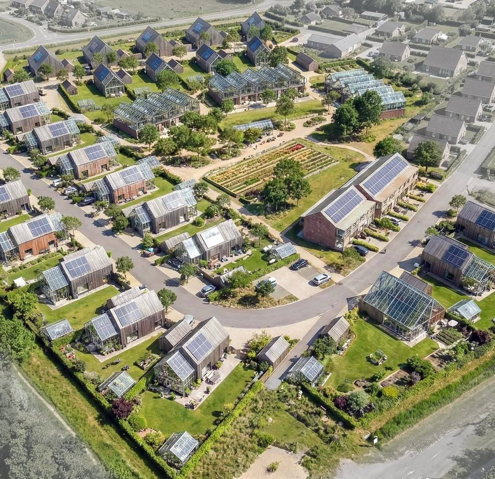
Серверный узел с вычислительными мощностями последнего поколения. Управляет нейросетевыми сервисами кластера, автоматизацией агро-циклов, безопасностью и блокчейн-экономикой. Внутри — децентрализованный информационный банк без внешней цензуры. Core кормит ресурсами всех соседей.
Девять обычных эко-агромодулей — каждый со своей агрокультурой, ремеслом или AI-направлением. Один варит сыр, другой содержит коз, третий запускает контент-фабрику. Излишки обмениваются внутри кластера через блокчейн без посредников.
IT-коворкинг, ремесленные мастерские, общие промышленные теплицы, биогазовая установка, водонапорная башня, дорожки из переработанных материалов. «Роща памяти» вместо традиционного кладбища — деревья с QR-кодами биографии.
Внутренние токены, привязанные к домам, продукции, активам и труду. Голосование за развитие, распределение прибыли, прозрачный обмен. RWA-токенизация, NFT-доли на проживание, хостинг нод. Кластер сам решает, куда идти дальше.
Естественное продолжение: 10-модульный кластер вырастает в полноценное автономное экопоселение с собственной инфраструктурой, рынком, школой и культурой. Полная концепция девяти систем поселения — в разделе 02 Тренд.
Поселение — это не «много кластеров», а другая ткань жизни. Общие пространства, разделение труда и специализации, собственный рынок, культурный центр, школа. Каждый житель — носитель своей роли, и кластер становится организмом с разделёнными функциями.
Когда первое поселение работает — оно становится blueprint-моделью для следующих. Те же эко-агромодули, те же DAO-протоколы, те же ресурсные циклы — но в новых регионах, с новыми участниками. Каждое следующее поселение быстрее и дешевле предыдущего.
Микрозаповедник — это биологическая крепость вокруг модуля или кластера. Густой лес из устойчивых видов работает как ветровой барьер, экранирует от шума, очищает воздух, удерживает влагу, кормит микрофауну и формирует собственный микроклимат.
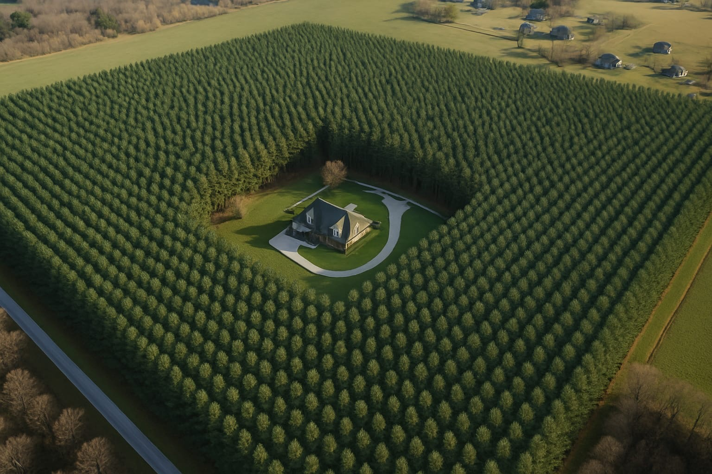
Дом в лесном квадрате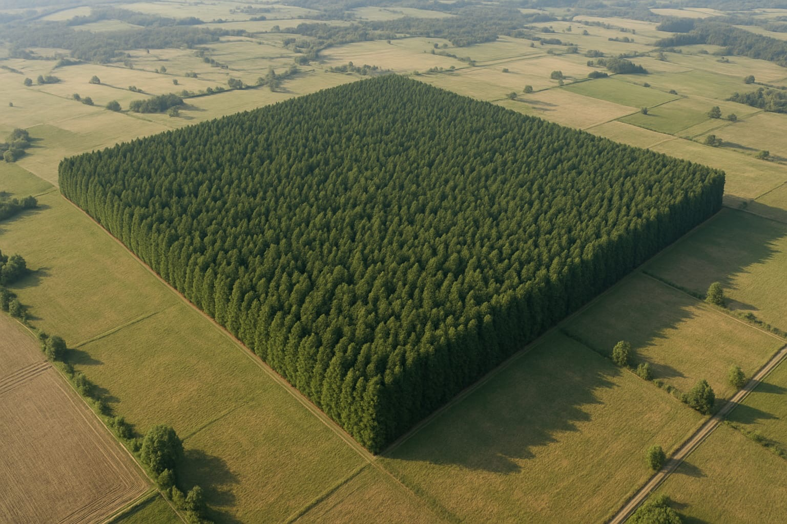
Биооазис в полях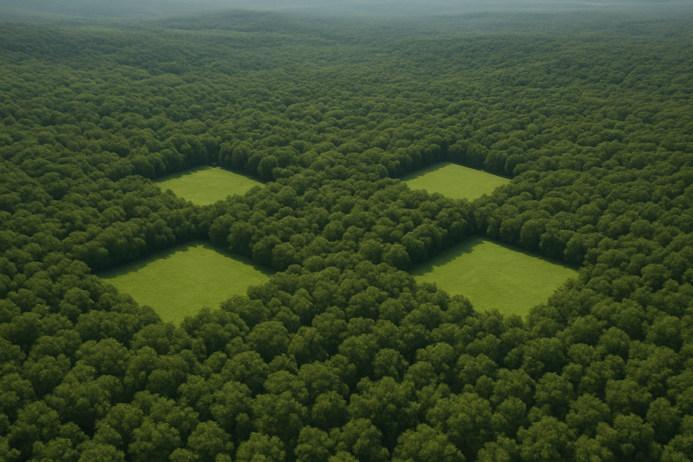
Кластер заповедников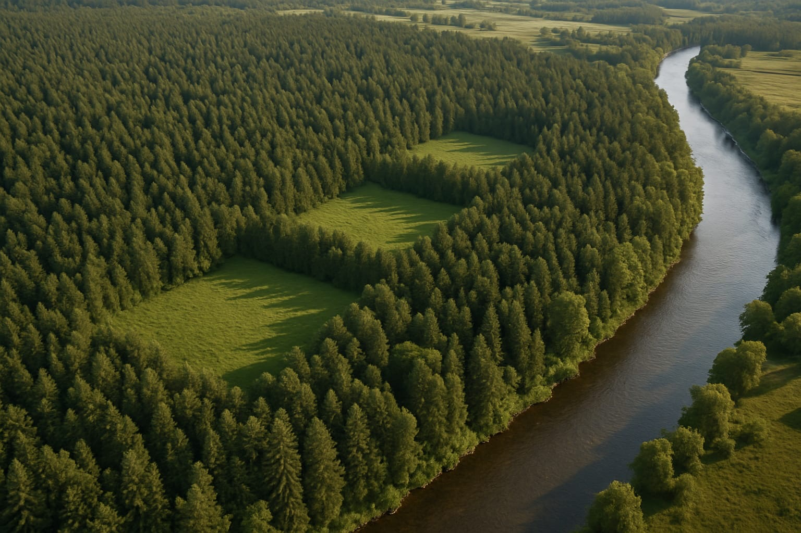
Лес у реки10–50 метров плотной лесопосадки по периметру — визуальная и звуковая изоляция от внешнего мира. Защита от ветра, пыли, посторонних. Свой микроклимат с повышенной влажностью и насыщенным фитонцидами воздухом.
Внутри заповедника развиваются устойчивые растения и животные — сорта, способные пережить климатические сдвиги. Семенной фонд, дикая микрофауна, опылители. Запасной генетический банк для будущих посадок.
Удалённость, лесная защита, своя экосистема — стратегический backup на случай политических, экономических, экологических потрясений. Идеально для регионов с уклоном на дикую природу (Алтай / Урал). Подробнее — в 05 География.
Лесопосадка возвращает землю к жизни — удерживает влагу, восстанавливает почвенный покров, формирует естественные водосборы. Из «утомлённой» сельхозземли через 5–10 лет получается полноценный экологический оазис.
Biom разворачивается одновременно в трёх локациях с разной ролью. Первая — для отработки и витрины. Вторая — для масштабирования и агротуризма. Третья — стратегический резерв и микрозаповедник на случай кризисов.
Тестовая витрина инноваций
Первый эко-агромодуль в оптимальной комплектации — отрабатывается вся инженерка, автономия и автоматизация. Затем ещё 2 модуля в альтернативных вариантах для оптимизации серийного производства. Финал — кластер из 9+ модулей с потенциалом перехода в полноценное эко-поселение.
База для смарт-агротуризма
Второй кластер — уже отработанный, на тёплом юге. Длинный сезон, существующий туристический поток, доступ к чёрному морю. Уклон на эко-агротуризм и премиальное смарт-фермерство в частном секторе. К моменту запуска подключаются госпрограммы и гранты.
Микрозаповедник как страховой контур
Третья локация — масштабирование с уклоном на естественную автономную среду. Удалённость от стратегических объектов и промышленных рисков. Внутри развивается микрозаповедник с устойчивыми растениями и животными, а вокруг него — кластер. Запасной вариант на случай глобальных кризисов.
Три точки на карте — три разных риска и три разных возможности. Если что-то пойдёт не так в одной — две другие продолжат работать. Это не три проекта, а одна распределённая экосистема.
Шесть категорий критериев для подбора локации с прогнозом до 2050 года. На основе авторитетных и народных источников.
Удалённость от приграничных зон с конфликтами и миграциями. Вдали от стратегических военных объектов, атомных и химических станций, ракетных частей. Прогноз политических / экономических / экологических рисков до 2050.
Развитый крупный город рядом — медицина, образование, инфраструктура, рынки сбыта, ЖД- и авиа-сообщение. Минимальная преступность, низкая депопуляция района.
Плодородная земля (чернозём, серая лесная). Грунтовые воды, реки, озёра, родники. Леса, дрова, ягоды, грибы. Возможно — близость гор.
Куда переезжают люди — растущие районы, не вымирающие. Молодое население, развивающаяся социальная среда.
Поддержка сельского хозяйства, развитие территорий и туризма — субсидии, гранты, льготные ставки, программы переселения.
Природа, вода, лес, умеренный климат. Реки / озёра / родники, возможность скважины. Чернозём, суглинок. Вдали от промзон, свалок, трасс. Ближе к горам, чистому воздуху, талой воде.
Три фазы — три порядка масштаба. Каждая не отменяет предыдущую, а строится на ней. Один модуль становится фундаментом кластера, кластер — моделью для глобальной франшизы.
MVP · CORE UNIT
Запуск первого полнофункционального модуля. Строительство «базового» эко-агромодуля, развёртывание вычислительного ядра, отладка проприетарного ПО для управления инженерными связками (энергетика + AI + агро). Тестирование себестоимости для последующих юнитов через прямые OEM-контракты с заводами.
CLUSTER · EXPANSION
Масштабирование системы до полноценного кластера: 1 Core + 9 Satellites. Формирование замкнутого сообщества с внутренней блокчейн-экономикой распределения и обмена ресурсами. Отработка коллективного масштабирования вычислительных мощностей и выход на промышленные объёмы производства премиум-экопродукции.
GLOBAL · FRANCHISE
Трансформация проекта в глобальную девелоперскую платформу. Упаковка технологий в готовое «коробочное» инфраструктурное решение для инвесторов по всему миру. Продажа франшизы на строительство автономных хабов как самого надёжного и доходного защитного актива в новую эпоху.
Принцип развития
Центральный серверный узел в Core Unit на вычислительных мощностях и процессорах последнего поколения. Управляет локальной сетью, нейросетевыми сервисами, автоматизацией агро-циклов, мониторингом безопасности и генерацией прибыли. Включает децентрализованный информационный банк без внешней цензуры.
Полная независимость от центральных энергосетей. Система генерирует энергию через мини-ГЭС (базовая нагрузка) и массив солнечных панелей (пиковая нагрузка). Накопление — промышленным массивом аккумуляторов.
Высокотехнологичные вертикальные фермы замкнутого цикла в каждом модуле. Аквапоника и аэропоника для редкой премиальной эко-продукции без химикатов. Система LSS (Life Support System): скважина + генерация воды из атмосферы (AWG) + биореакторы для переработки отходов. Управление AI-Агрономом в реальном времени.
Эко-агромодули на принципах энергопассивности. Конструкция базируется на светопропускающих ETFE-мембранах и геодезических куполах, создающих эффект оранжереи и максимизирующих КПД биосистем. Высокий уровень физической защищённости и полный цифровой суверенитет за счёт локальной сети с защитой от внешнего мониторинга.
Слева — стоимость одного модуля. Справа — масштабирование до кластера. Детальная финансовая модель MVP — в разделе 09 Финмодель.
Расширенный каталог источников дохода, инструменты крипто-экономики и финансовая модель самоокупаемости. Шесть хедлайн-потоков уже в 03.4 Актив — здесь полная развёрнутая картина по категориям.
Собственный децентрализованный токен проекта — цифровой актив, через который можно инвестировать или отправлять донаты, получать доступ к бонусам, скидкам, закрытому контенту и другим возможностям экосистемы.
Проект управляется в формате DAO. Каждый владелец токена получает право голоса. Принимаются коллективные решения по строительству, наполнению, событиям, распределению прибыли. У каждого участника может быть своя монета для обмена.
Купить или арендовать долю — «домик на 3 дня», «модуль на сезон», «земельный участок». NFT можно дарить, перепродавать, бронировать, обменивать на продукцию или услуги (эко-боксы, проживание, мастер-классы). Каждый токен — часть живого сообщества, а не просто инвестиция.
При загрузке 50–60 % — самоокупаемость за 1,5–2 года.
AI-аватар, художественный фильм и мобильное приложение — три разных формата, объединённые одной задачей: сделать идею Biom вирусной без личного участия владельца.
Виртуальная личность, живущая в проекте: топит печь, варит сыр, общается с подписчиками. Мультиплатформенный блог в Instagram / TikTok / Telegram / YouTube. Подробнее →
Скрытая презентация деревни через жанровый киноформат — арт-хаус с элементами мистики. AI-актёры, контраст город / деревня. Подробнее →
AI-помощник, который ведёт график, рацион, задачи по хозяйству. Опция цифровой копии владельца — для цифрового бессмертия. Подробнее →
Уникальная виртуальная личность — реалистичный образ с индивидуальной историей, миссией и мировоззрением. Лицо и голос проекта: рассказывает о жизни в автономии через видео, фото, тексты, прямые эфиры. Сначала 2D, потом 3D для присутствия во всех цифровых пространствах.
Показывает рост растений, аквапонику, грибную ферму — как часть ежедневной рутины.
Бытовые ритуалы как контент — натуральная эстетика и атмосфера автономной жизни.
Визуальная лента — фото, короткие видео, утренние ритуалы, ужины у камина.
Отвечает на комментарии, ведёт чаты, записывает видеообращения. В будущем — интерактивные диалоги через LLM.
Осознанная, здоровая, свободная жизнь в гармонии с природой — как пример.
Эмоциональный мост между проектом и аудиторией — от поверхностного интереса к участию.
Контент адаптирован под массовую аудиторию. Используются темы глубоко вшитые в потребности человека — желания, цели, успех, стиль жизни, эротика, тайна, юмор. За внешней формой — миссия исцеления от внутренних пустот через постепенное раскрытие настоящих ценностей. От поверхностного интереса — к глубинной пользе: психология, философия, ремесло, фермерство, экология, духовное развитие, IT, нейросети.
Художественный фильм как медиа-инструмент: живые актёры используются только для обучения AI-моделей, а герои становятся цифровыми аватарами — инфлюенсерами проекта. Контраст городского кошмара и деревенской утопии формирует у зрителя желание: «Я хочу так жить».
Риски и кризисы — политические, экономические, экологические. Грязный воздух, токсичная еда, разрушающая медицина, стрессы, хронические заболевания. Деградирующие развлечения — алкоголь, кальян, наркотики. Тесная квартира, плохие соседи, выгорание.
Своё пространство, любимое дело, удалённая работа, фермерство, ремесло. Чистые энергия, еда, вода, природа. Автоматизированный замкнутый цикл жизнеобеспечения. Ферма с животными, теплица, огород, мастерская. Жизнь по своему ритму.
Эротический хоррор + арт-хаус с элементами мистики, психоделики и визуальной эстетики в деталях. Атмосферная съёмка передаёт ужас перед цивилизацией и магическое притяжение деревни. Референсы: «Солнцестояние», «Таинственный лес», «Собиратель душ», The Witch.
«Последний остров» / «Тихий апокалипсис» / «Экосистема греха». Главный герой — привычный образ, в котором целевой зритель увидит себя. Сюжет: «Бегство от цивилизации — единственный способ выжить».
Город: тесная квартира, плохие соседи, ссора пары, усталые лица, неоновые вывески, пустые холодильники, очередь за водой, кашель больного, грязные развлечения. Деревня: туман над озером, биолюминесцентные грибы, теплицы с тропическими растениями, обнажённые тела в лунном свете, ритуальные танцы. Тизер: герой бежит по лесу, просыпается в домике, чашка травяного чая. Голос за кадром: «Ты всё ещё думаешь, что это сон?»
Загружаешь приложение, создаёшь персонального AI-аватара. Он ведёт твой график, рацион, задачи по хозяйству и любимому делу. Обучается в процессе взаимодействия и помогает на основе встроенного машинного обучения.
AI-аватар как помощник в любой эстетике — современный стиль, ретро, фэнтези, философ. Обучается на твоих данных, но остаётся персонажем со своей внешностью и голосом. Ведёт ежедневные задачи, отвечает на вопросы, поддерживает.
AI-аватар как цифровое бессмертие — обученная на всех твоих материалах и данных копия личности. Продолжит жить после твоего ухода, с ней можно общаться как с тобой. Сохраняет твой стиль, ценности, мышление, опыт.
Основное: фото, видео, чаты, интересы, хобби, идеи, желания, цели. Деятельность: работа, творчество, ремесло. Дом: умные системы, планировка, технологии.
О себе: задачи на саморазвитие, духовное развитие, личные цели. Деятельность: задачи по любимому делу, творчеству, ремеслу. Дом: уход за технологиями, фермерство, выращивание культур и животных.
Рецепты завтрака / обеда / ужина из своих продуктов — быстрые, малокалорийные, для улучшения сна / энергии / зрения. Уход за системой — что и когда сажать, какие запасы делать. Развитие дела — что писать, продвигать, достигать. Интеграция с умным домом — температура, вода, полив, кормление животных.
Детальный разбор бюджета первого модуля и стадий развития проекта. Краткий бюджет проекта — в 06 Реализация, прайс-лист услуг — в 07 Монетизация.
Каждая стадия не отменяет предыдущую — выручка с MVP финансирует DAO, доход с кластера финансирует франшизу. Самофинансируемый рост от 5 млн ₽ до промышленного масштаба.
Каталог реализованных проектов, на которые я опираюсь — модульные дома, глэмпинги, эко-деревни, фермерство, агротуризм. Развёрни нужную категорию, чтобы увидеть список.
Глобальные риски и прогнозы до 2030–2050 от авторитетных источников — ВБ, ООН, МВФ, NASA, Oxfam, FAO, ВОЗ. Не теория заговора — реальные тренды, делающие автономный дом не роскошью, а страховкой.
Дом работает на тебя, никогда не обанкротится, стабильный доход во все времена. Реальные активы в эпоху рисков.
Солнечные панели + ветрогенератор. Биореактор → метан из отходов. Своя скважина с фильтрацией. 780 000 ₽/год экономии.
1 умная теплица = 300 кг овощей в год. Свои куры = 500 яиц + мясо без антибиотиков. 365 дней урожая.
Самый чистый воздух — с фитонцидами леса. Вода чище бутилированной, прямо из источника. Углеродный след −90% (MIT 2023).
3–4 млн ₽ стоимость эко-дома — дешевле, чем ипотека на клетку. Окупаемость 5 лет с доходом ~80 тыс ₽/мес.
Если рухнет система — твои сбережения уцелеют в реальных активах. Запас на 2 года в подземном хранилище.
Цель: не дать России восстановиться, подорвать экономику и стабильность. Полная изоляция от высоких технологий, давление на Китай, блокировка нефтегазовых доходов. Поддержка сепаратизма (Кавказ, Татарстан, Сибирь), кибератаки, раскол элит. НАТО у границ. Итог: экономика РФ на уровне 1990-х, рост протестов.
Югославизация: отделение Кавказа (при поддержке Турции), Сибирский сепаратизм («Республика Сибирь» под протекторатом Китая), Калининград под международный контроль. Давление на генералов для нейтрализации ядерного фактора. Китай заберёт Дальний Восток и Сибирь в обмен на экономическую помощь. Итог: РФ распадается на 4–5 государств.
Остатки РФ — сырьевой придаток. Европейская часть — под влиянием ЕС. Сибирь и ДВ — Китай. Кавказ — Турция и исламские режимы. Ликвидация ядерного статуса. Переписывание истории: «Россия — failed state». Итог: нет РФ как субъекта мировой политики.
Альтернативный сценарий возможен (Китай встанет на сторону РФ, гражданская война в США, союз с глобальным Югом), но вероятность распада — 60%. Автономный модуль — реальный страховой контур в этом сценарии.
Два пути входа в проект — построить свой модуль или войти в развитие как инвестор и партнёр. Пишите напрямую — обсудим архитектуру, сроки, финмодель.
Хочешь свой эко-агромодуль — обсудим участок, комплектацию, бюджет, сроки. Покажу референсы и проектную документацию. Возможна поэтапная сборка от эконом-варианта до премиум.
Написать в TelegramГотов войти в проект как инвестор, партнёр или участник DAO — покажу финмодель, дорожную карту, условия входа. Открыты как ранние доли, так и масштаб от $200k до $50M.
Обсудить инвестиции